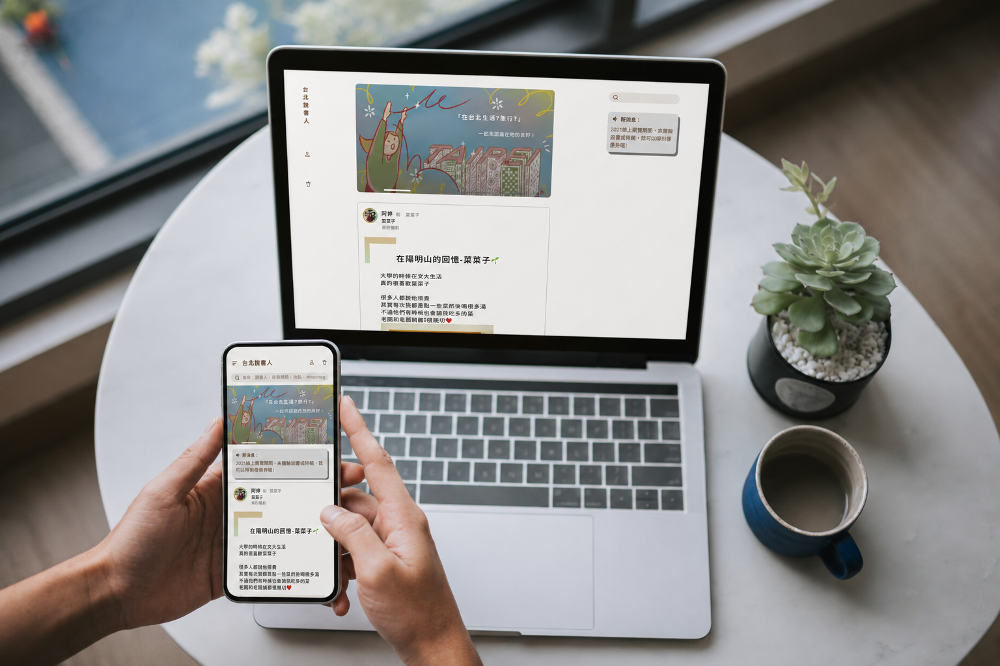
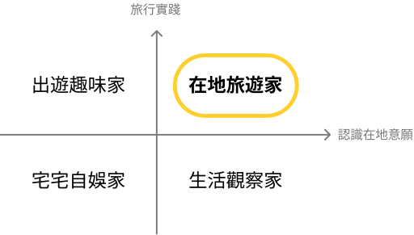
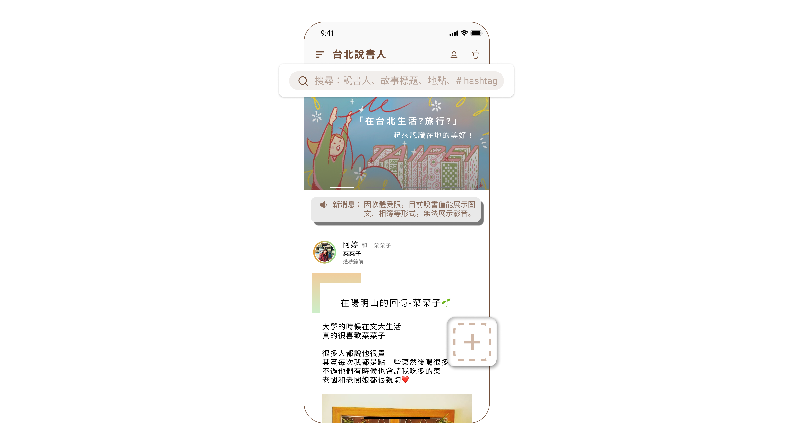
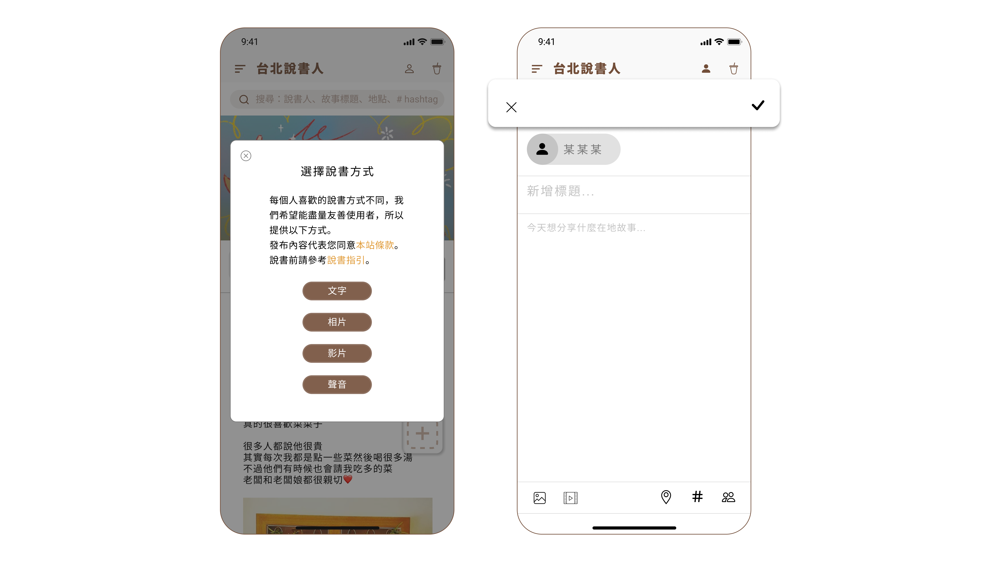
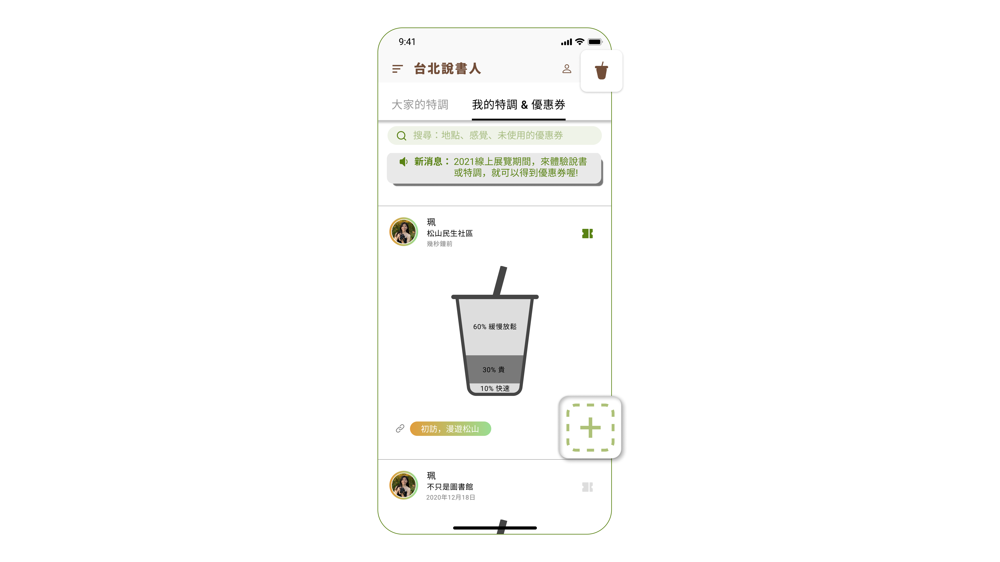
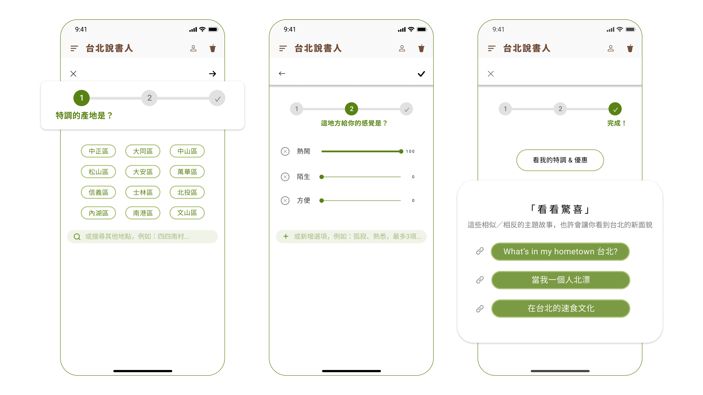

產品設計師
PEILING
CHEN
珮翎擁有心理學術背景，以及 3+ 年 UX 研究、UX/UI 設計、網頁開發、專案管理的經驗。

scroll
珮翎擁有心理學術背景，以及 3+ 年 UX 研究、UX/UI 設計、網頁開發、專案管理的經驗。



珮翎擁有心理學術背景，以及 3+ 年 UX 研究、UX/UI 設計、網頁開發的經驗。
服務過財星 500 大企業，也曾執行 2C 網頁、2B 的 CRM 與 CMS 後台系統等專案。
不只追求使用者體驗，更致力於問題解決與回應商業需求，打造能落地、具有價值的產品及策略。
珮翎是一個仔細縝密、有求知慾、會想要查證事實或找方法驗證的人，也很貼心、會觀察大家的需求♡
珮翎是一個很注重細節，而且思考很全面的人，規劃事情的時候不會只看眼前的需求，還會考慮到不同角色的感受和後續可能發生的狀況，所以能把事情想得很完整。
珮翎有同理心、有責任感，而且很替別人著想！很多事情都會默默先想到、先準備好，是很貼心的人 ♥
珮翎是一個不會侷限自己的職能 「只該做什麼」 的人。會連同系統的 flow 一起思考，所以也能給合作的工程師一些 input，一起激盪出更好的解決方式。珮翎會 empower 自己去承擔一些責任讓專案的推進更順利！
品牌 MGM 提升至
230%減少開發時程約
50%建置前台網站與管理後台各一個
1+1Panasonic 於 2024 年推出全新會員分級制度，並整合線上線下會員服務，包含電商、門市等多通路體驗，打造完整的會員生態系。我負責會員網站改版，並在上線後持續透過研究與數據，優化會員經營策略。
消費者、經銷商、Panasonic 內部行銷 / 服務 / IT 等多個部門以及高層。
增加會員數量與活躍度是專案的重要目標，因此在各種類型的使用者旅程中，規劃註冊會員的機會點，同時避免暗黑設計，在商業和體驗中取得平衡。另外，透過訪談發現，原本的會員宣傳概念較抽象而難以吸引消費者，因此建議團隊將溝通概念從點數改為具體且實惠的咖啡，使 MGM 成長至 230%。

除了易用性測試，我也運用 GA 數據來輔助設計。例如透過數據找出點擊率較高的區塊，將新功能「電子票券」規劃在此處，達到宣傳效果，且方便會員快速使用。

滿足客戶持續擴增單元與管理內容的營運需求，規劃具有一致性、擴充性的後台系統，幫助減少約 50% 的開發時程。

由於必須先產生投稿資料 ID，資料庫才能儲存後續的投稿內容，因此透過彈窗與流程設計，在技術限制與使用者理解之間取得平衡

將重複的開發規格邏輯，歸納成表格，幫助工程師快速掌握開發規則，打造簡潔的規格文件瀏覽體驗。

不僅透過會員訪談與問卷調查，探索全通路體驗，也深入第一線和經銷商進行利害關係人訪談，傾聽實務營運痛點。在商業框架下，平衡多方利益，發展出品牌、經銷商、消費者三方的共贏策略。

除了運用 AI 整理研究資料提升作業效率，我也嘗試結合親和圖與後端的資料思維，建置質化訪談的資料表模板，期待未來能利用 AI 輔助，進行自動化交叉分析，更高效、深度的探索洞察。
改版過程中，受到開發架構、法務規定、部門協商等因素影響，有些優化體驗的設計無法馬上實現。但我透過訪談、數據等資料，佐證使用者的需求與商業效應，持續推動產品策略的發展。
培養品牌與行銷思維，透過多渠道行銷連結會員網站、官網、官方商城、服務網、內部平台等多個系統，延伸更多品牌接觸點。串連線上與線下，善用資料，優化服務體驗。
趨近於零的使用者學習成本
≈0提升資料傳送效能約
66%新聯陽是知名的房地產代銷企業，代理建商銷售建案，使用 CRM 系統來管理預約賞屋與銷售的資料。我負責處理系統的各種迭代需求，本頁以「貴賓預約賞屋通知優化」的項目進行說明。
因應 LINE Notify 功能停用，利用 LINE OA 打造「貴賓預約賞屋通知」的替代方案，讓新聯陽團隊能即時收到貴賓預約賞屋的通知，並且串連多個內部系統，進行後續的資料管理。
新聯陽內部銷售團隊、建商客戶、賞屋貴賓。
梳理 Flow、規劃資訊架構、Wireframe，撰寫 Spec，進行 UAT 測試，和工程師、業務團隊協作。
發展解方與策略，以及製作簡報，向客戶提案。
作為窗口，直接與客戶溝通、互動，釐清客戶需求。
公司過去曾經和客戶討論過建立 LINE OA，善用行銷與訊息發佈工具。因此我研究 LINE OA 的各種功能，例如圖文選單、客製化通知型訊息等，思考是否能在專案中為客戶提供更多價值。但經過分析評估後，仍決定聚焦、回歸到重點需求——解決通知的問題。

思考產品沿革與專案需求後，初步發想出 2 種方案，方案 A 為群組訊息，方案 B 為個人訊息。考量到客戶使用習慣、後端資料架構，最後選擇方案 A，降低客戶的學習成本，並簡化開發工程。

後續，梳理 LINE OA 與各系統平台的複雜流程，包含在貴賓操作介面後，如何觸發資料傳送、資料如何在多個平台間進行處理，確保銷售團隊能獲得通知，並讓資料成功接收與儲存。

當工程師提出可行性的問題，我保持開放的心態，和工程師聊聊，深入理解困難的本質。再研究 LINE Messaging API，綜合零散的資訊，以終為始，從需求出發，以目標為核心，提出運用 Webhook 的流程建議，解決後端的 groupID 與 CaseName 資料串接問題。

我負責直接和客戶溝通產品需求，客戶有時會用自己習慣的語言或方式表達，或突然提出想做某個項目。但項目的背後可能隱藏著真正的需求，唯有了解客戶，才能找出最佳解，這也幫助我累積和客戶、利害關係人溝通的能力。
雖然一開始工程師說方案不可行，但我相信可能還是有機會。儘管後端不是我的專長，然而善用邏輯思考、過去的資料學習經驗，努力找方法，提升可能性，最終成功讓解方落地。同時也證明設計師不只能優化體驗，還有解決問題的價值！
同理、了解工程師所說的「開發困難」，並深入思考後，再一起討論、動腦，實現解決方案，滿足客戶的需求。和跨職能夥伴協作、突破困難很開心，是很棒的團隊合作經驗。
易用性分數提升
35.7%NPS 提升
+60分臺北轉運站 App 由萬達通實業公司推出，是整合多家業者的客運購票服務，範圍涵蓋全台。初期透過公路運輸服務數位化，解決尖峰時刻臨櫃排隊的痛點；現今則以客運為主、旅運電商為輔，提供一站式服務。
梳理企業目標與各方利害關係人的需求，作為設計方向的依據。
臺北轉運站的優勢為功能齊全、不須另外取票、客運業者數量多，且有獨特的旅運加值服務。
| App | 業者數量 | 線上取票 | 選座位 | 手續費 | 客運動態 | 優惠 | 旅運電商 |
|---|---|---|---|---|---|---|---|
| 臺北轉運站 | 9 | ✓ | ✓ | ✓ | ✓ | ✓ | |
| 客運通 | 2 | ∆ | ∆ | ||||
| 和欣客運 | 1 | ✓ | ✓ | ∆ | ∆ | ✓ |
備註：
✓ 表示有該功能，或符合標題描述。
∆ 表示有該功能但較不齊全，或在部分情境下符合標題描述。
票券功能齊全是客運 App 的優勢，但高鐵、台鐵不收訂票手續費，手續費在無優惠活動時會成為阻力；且公路客運較難掌握時間。
| App | 線上取票 | 選座位 | 手續費 | 優惠 | 旅運電商 | 其他發現 |
|---|---|---|---|---|---|---|
| 臺北轉運站 | ✓ | ✓ | ✓ | ∆ | ✓ | 臺北轉運站的優勢為可選位、購票與多元服務同在一個 App。 |
| 台鐵 | ✓ | ∆ | ∆ | 台鐵在介面、運輸產業定位上較折衷。 | ||
| 高鐵 | ✓ | ∆ | ✓ | ∆ | 高鐵的介面一如搭乘的舒適感，並融入 CIS。但購票和旅運被分成兩個 App。另外，高鐵會透過自家刊物行銷旅運商品。 |
備註：
✓ 表示有該功能，或符合標題描述。
∆ 表示有該功能但較不齊全，或在部分情境下符合標題描述。
旅遊商品種類較少、價格未必較便宜。競品有較完整的商品資訊及層級設計，值得參考。
| App | 主打類別 | 介面資訊層級 | 介面視覺 | 優點 |
|---|---|---|---|---|
| 臺北轉運站 | 公路客運 | ★★★ | 較不符主流規範 | 優惠活動時買客運較便宜 |
| KKday | 旅遊 | ★★★★★ | 簡單清爽 | 新潮的品牌風格、國際化 |
| Gomaji | 購物 | ★★★★ | 略俗、眼花撩亂 | 價格優惠；以熱情顏色和明顯 CTA 營造購物氣氛 |
從 App Store 評論，以及 Dcard、PTT 等論壇，初步了解使用者與潛在使用者的想法。

改造前（左）：廣告排版擁擠、分類模糊、看不出可以右滑。購票按鈕明顯，容易忽略其他訊息。
改造後（右）：版面清爽，設計常用功能區塊，商品種類一目了然。露出部分可滑動的元件，並加上縣市資訊。SUS +35.7%，NPS +60 分。

改造前（左）：起訖站的 UX 文案為「台北到高雄」，但非預設值，仍需點選。Picker 沒有顯示星期幾，無法對照。
改造後（右）：UX 文案改成「起點與終點」，達到更明確的引導效果，並加上 Icon 助於理解。Picker 調整為日曆形式。

改造前（左）：許多重複的資訊。優惠折抵字太小，且需另外計算價格。
改造後（右）：捨棄多餘的資訊。放上折扣前原價、Badge 說明，讓優惠資訊更明確。

改造前（左）：座位的按鈕狀態不符主流規範與色彩心理學。禁用狀態應呈現忽略的引導效果，但紅色具警示意味，引人注目。
改造後（右）：無彩色與主色的設計，運用透明度表現禁用狀態。操作更直覺，也能減少色覺辨認障礙。

改造前（左）：計費資訊不方便理解。按鈕的 UX 文案突然從「確定」變成「開立發票」。
改造後（右）：計費較直觀。按鈕的 UX 文案依據前面的邏輯，改為「確定」。

改造前（左）：只有訂購成功訊息與明細。
改造後（右）：在使用旅程中，這是情緒較放鬆的接觸點。善用此頁行銷客運的減碳價值，提升形象。並推薦相關商品，增加曝光。

元件設計規範，涵蓋按鈕、輸入框、卡片等元件的樣式定義。
過去我習慣用紙筆繪製 Wireframe，這次嘗試用 Figma。Wireframe 以規劃架構、功能為主，常以低保真形式出現。但當我使用電腦繪製，常常會在意視覺細節。未來應根據情境，以方便溝通為基礎，更有效率的製作 Wireframe。
過去進行研究測試，雖然對於使用者提出的困惑感到好奇，但如果回饋牽涉到產品背後的限制，我也會想向使用者解釋原因。這次發現自己很融入測試過程，想解釋的念頭不再困擾我，能專注在收集使用者的聲音。
一位受試者提到，雖然 Redesign 改善了使用體驗並增加美感，但不會讓他改變 NPS 分數，因為手續費的痛點沒有被解決。突然感覺設計的價值被磨滅，這讓我再次思考設計的成本和價值，又想起某位設計前輩曾說，「創新是找麻煩」，為了實現設計，必須進行大工程，增加同事工作量。綜觀此次專案的驗證數據，確實提升了易用性和滿意度。設計有其價值，但實際反映的效益很可能會受到發揮空間、專案限制的影響。
O2O 轉換率
25%入圍決選前
12%可瀏覽、分享在地故事與旅遊資訊的平台，有趣的特調遊戲，並結合在地的手搖飲優惠券！
從背景研究發現以下趨勢：
從訪談、問卷發現年輕族群：
Persona Matrix：TA 為有認識在地意願、旅行實踐的「在地旅遊家」。

阿豪，22 歲大學生
「如果景點有故事，造訪時能更有感覺，例如這條街誰走過、發生什麼事。」
邱邱，24 歲碩士生
「還記得那次的居民導覽，不但更認識在地，而且那份感動一直在我心裡。」

小黃，27 歲上班族
「平常上班這麼累，週末就是要來趟小旅行啊！等不及要探索這座城市了！」




一開始學到設計思考的步驟是「同理、定義、發想、原型、測試」，回頭整理專案的時候有點卡住，感覺有些東西難以被特定分類到單一步驟。在前輩的分享中，聽到設計思考不是線性，而是反覆的過程。這解開了我的困惑，也提醒我要把設計思考當成一種思維，帶著同理心、勇於嘗試的精神活用它。
專案中後期，剛好遇到疫情大爆發，多了很多時間在家，讓我更想把設計做得更完整，於是不小心擴大 scope。初出茅廬，雄心壯志，什麼都想做到最好。雖然廢寢忘食的調整設計、畫 Figma 很快樂，但也讓我反思專案管理。這次專案較彈性、時間充裕，提供我探索的機會。未來應該考慮到情境和資源，更有效率、更敏捷的執行專案。
第一次深入接觸 UI/UX、設計思考和商業概念，這些都是在助人背景不太會碰到的。雖然起步有些艱難，但這一年從使用者研究到體驗設計，做了很多嘗試，也收穫滿滿！發現到好的設計背後除了貼近使用者需求，也要考量利害關係人跟技術限制，並且有商業模式支撐。